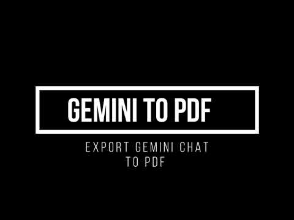
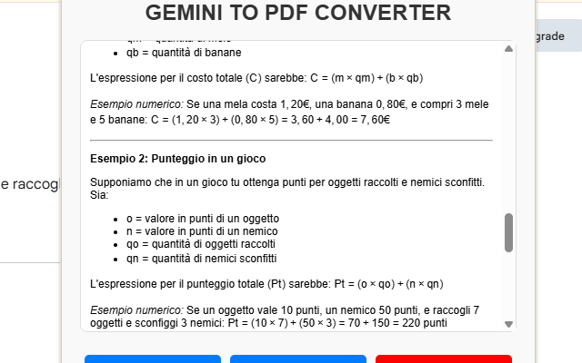

GEMINI TO PDF Converter
Have you ever had an insightful conversation with Gemini that you wanted to keep forever? ✨ Meet GEMINI TO PDF Converter – the simplest, most reliable way to save your Gemini chats into beautifully formatted PDF documents. Whether you use Gemini for learning, coding, brainstorming, or just casual discussions, this extension ensures your conversations are never lost.
With GEMINI TO PDF Converter, you can export both questions and answers exactly as they appear on screen, including images, code blocks, and even complex math formulas rendered with KaTeX. Instead of messy copy-pasting or screenshots, you get a professional PDF with clean structure and selectable text. 📑 This makes it perfect for students, researchers, developers, or anyone who relies on Gemini for valuable information.
The extension is designed with simplicity in mind. Once installed, you only need a single click on the extension icon to launch the export tool. You can decide whether to include the full conversation or just selected parts. Every exported file keeps the natural flow of dialogue, so it feels like revisiting the live chat, but preserved in a permanent, shareable format.
Another highlight is flexibility. You can reorder messages, remove sections you don’t need, or adjust formatting before finalizing the PDF. This way, your exports are not only accurate but also personalized. Whether you’re building documentation, archiving study sessions, or sharing results with colleagues, GEMINI TO PDF Converter adapts to your needs. 🚀
📄 How to Use
- Install the extension from the Chrome Web Store.
- Open a conversation with Gemini on
gemini.google.com. - Click the extension icon in your browser toolbar.
- Preview the conversation and select which messages to include.
- Edit or reorder content if needed.
- Click “Generate PDF” and save your file. 🎉
📷 Screenshots


✅ Features
- Export Gemini conversations to high-quality PDFs
- Supports images, code blocks, and math formulas
- Option to select, edit, and reorder content
- Simple one-click export workflow
- No login or configuration required 🔒
Keep your best Gemini conversations forever. Whether you’re archiving academic material, preparing tutorials, or saving meaningful interactions, GEMINI TO PDF Converter makes the process effortless. 🌟
View on Chrome Web Store